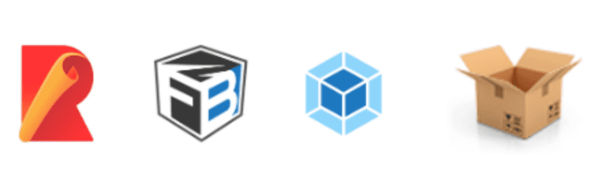

What is a Module Bundler?

Module bundlers are tools frontend developers used to bundle JavaScript modules into a single JavaScript files that can be executed in the browser.
Examples of modern module bundlers (in no particular order) are: webpack, rollup, fusebox, parcel, etc.
Module bundler is required because:
- Browser does not support module system, although this is not entirely true nowadays
- It helps you manage the dependency relationship of your code, it will load modules in dependency order for you.
- It helps you to load your assets in dependency order, image asset, css asset, etc.
To illustrate, imagine you are building a web application, which is made up of multiple JavaScript files. You add JavaScript files into html via script tags:
<html>
<script src="/src/foo.js"></script>
<script src="/src/bar.js"></script>
<script src="/src/baz.js"></script>
<script src="/src/qux.js"></script>
<script src="/src/quux.js"></script>
</html>
Each file requires a separate http requests, which is 5 round trip requests in order to get your application started. So it would be better if you can combine all 5 files into 1:
<html>
<script src="/dist/bundle.js"></script>
</html>
(Although with [HTTP/2](https://developers.google.com/web/fundamentals/performance/http2/), this is much less of a case right now)
So how do we generate the dist/bundle.js?
Several challenges arise in the process:
- How do we maintain the order of the "files" to be included?
- It would be great that it is some sort of dependency order amongst the "files"
- How do we prevent naming conflicts between "files"?
- How do we determine any unused "file" within the bundle?
All of these can be solved if we know the relationship amongst each files, such as:
- Which file is depended on another?
- What are the interface exposed from a file? and
- Which exposed interfaces are being used by another?
These information, granted, can solve the challenges brought up respectively. So, what we need is a declarative method to describe the relationship between files, which led us to the JavaScript Module System.
CommonJS or ES6 Modules provides way for us to specify what files we are dependening on, and which of their interface we are using in our file.
// CommonJS
const foo = require('./foo');
module.exports = bar;
// ES Modules
import foo from './foo';
export default bar;How do we bundle?
With the information gathered from the module system, how do we link the files together and generate the bundle file that encapsulates everything?
If you scrutinize the bundle generated by webpack and rollup, you would notice that the 2 most popular bundler takes a totally different approach in bundling, and here I coined them, the "webpack way" and the "rollup way".
Let's illustrate this with an example:
Say you have 3 files, circle.js, square.js and app.js:
// filename: circle.js
const PI = 3.141;
export default function area(radius) {
return PI * radius * radius;
}
// filename: square.js
export default function area(side) {
return side * side;
}
// filename: app.js
import squareArea from './square';
import circleArea from './circle';
console.log('Area of square: ', squareArea(5));
console.log('Area of circle', circleArea(5));The "webpack way"
What would be the "webpack way" bundle looks like?
// filename: webpack-bundle.js
const modules = {
'circle.js': function(exports, require) {
const PI = 3.141;
exports.default = function area(radius) {
return PI * radius * radius;
}
},
'square.js': function(exports, require) {
exports.default = function area(side) {
return side * side;
}
},
'app.js': function(exports, require) {
const squareArea = require('square.js').default;
const circleArea = require('circle.js').default;
console.log('Area of square: ', squareArea(5))
console.log('Area of circle', circleArea(5))
}
}
webpackStart({
modules,
entry: 'app.js'
});
I have made some slight modifications for easier illustration
First thing you would notice is the "module map". It is a dictionary that maps the module name to the module itself, which is wrapped by a function. The "module map" is like a registry, it makes it easy to register modules by adding entries.
Secondly, each module is wrapped by a function. The function simulates the module scope, where everything declared within the module is scoped within itself. The function itself is called the "module factory function". As you can see, it takes in a few parameters, to allow the module to exports its interface, as well as to require from other modules.
Thirdly, the application is start via webpackStart, which is a function that glues everything together. The function itself, often called as the "runtime", is the most important piece of the bundle. It uses the "module map" and the entry module to start the application.
// filename: webpack-bundle.js
function webpackStart({ modules, entry }) {
const moduleCache = {};
const require = moduleName => {
// if in cache, return the cached version
if (moduleCache[moduleName]) {
return moduleCache[moduleName];
}
const exports = {};
// this will prevent infinite "require" loop
// from circular dependencies
moduleCache[moduleName] = exports;
// "require"-ing the module,
// exported stuff will assigned to "exports"
modules[moduleName](exports, require);
return moduleCache[moduleName];
};
// start the program
require(entry);
}
I have made some slight modifications for easier illustration
webpackStart defines 2 things, the "require" function and the module cache. The "require" function is not the same as the require from CommonJS. "require" takes in the module name, and returns the exported interface from a module, eg: for circle.js it would be { default: function area(radius){ ... } }. The exported interface is cached in the module cache, so that if we call "require" of the same module name repeatedly, the "module factory function" will only be executed once.
With "require" defined, starting the application would be just "require"ing the entry module.
The "rollup way"
Now you've seen how webpack bundle looked like, let's take a look at the "rollup way" bundle:
// filename: rollup-bundle.js
const PI = 3.141;
function circle$area(radius) {
return PI * radius * radius;
}
function square$area(side) {
return side * side;
}
console.log('Area of square: ', square$area(5));
console.log('Area of circle', circle$area(5));
I have made some slight modifications for easier illustration
Firstly, the key difference in the rollup bundle, is that it is much smaller compared to the webpack bundle. There is no module map, as compared to the "webpack way". All the modules are "flatten" into the bundle. There is no function wrapping of modules. All the variables/functions that were declared within the module, is now declared into the global scope.
If everything declared in individual module scope is now declared into the global scope, what happened if 2 modules declare variable/function of the same name?
Well, rollup will rename the variable/function name, such that name collision do not happen. In our example, both circle.js and square.js have declared function area(){} within the module, when bundled, you see that both functions and their usage were renamed to avoid collision.
One of the side effects of not wrapping module with a function is the behavior of
eval, see here for more in-depth explanation
Secondly, the order of the modules within the bundle matters. Well you can argue that circle$area and square$area can come after console.log and it will still work, yet PI has to be declared before the console.log, because of temporal dead zone. So, sorting modules in order of their dependency matters for the "rollup way".
All in all, the "rollup way" seemed to be better than the "webpack way". It has a smaller bundle and less runtime overhead by removing all the functions.
Is there a drawback of the "rollup way"?
Well, sometimes it does not work well with circular dependency. Let's take a look at this contrived example:
// filename: shape.js
const circle = require('./circle');
module.exports.PI = 3.141;
console.log(circle(5));
// filename: circle.js
const PI = require('./shape');
const _PI = PI * 1
module.exports = function(radius) {
return _PI * radius * radius;
}
I have made some slight modifications for easier illustration
In this example shape.js is depending on circle.js and circle.js is depending on shape.js. So, for rollup to sort out which module to come first than another in the output bundle, there's no "correct" answer for it. Either circle.js then shape.js or shape.js then circle.js is reasonable. So, you could possibly get the following output bundle:
// filename: rollup-bundle.js
// cirlce.js first
const _PI = PI * 1; // throws ReferenceError: PI is not defined
function circle$Area(radius) {
return _PI * radius * radius;
}
// shape.js later
const PI = 3.141;
console.log(circle$Area(5));
You can tell this will be problematic right?
Is there a solution for this? A short answer is no.
A "simple" fix is to not use a circular dependency. Rollup will throw warnings at you if it encountered one.
Well, what makes the example "works" is that we have statements that are immediately evaluated within the module. If we change the evaluation of _PI to be lazy:
// filename: circle.js
const PI = require('./shape');
const _PI = () => PI * 1; // to be lazily evaluated
module.exports = function(radius) {
return _PI() * radius * radius;
}
the order of modules now does not really matter much:
// filename: rollup-bundle.js
// cirlce.js first
const _PI = () => PI * 1;
function circle$Area(radius) {
return _PI() * radius * radius;
}
// shape.js later
const PI = 3.141;
console.log(circle$Area(5)); // prints 78.525
This is because at the time _PI is evaluated, PI has already been defined.
Summary
So, let's summarize what we've learned so far:
- Module bundler helped us to combine multiple JavaScript modules into 1 JavaScript file.
- Different bundler bundles differently, and we've looked into 2 of the modern bundler,
webpackandrollup - the "webpack way":
- uses module map
- uses function to wrap each module
- has a runtime code that glues the module together
- the "rollup way":
- flatter and smaller bundle
- does not use function to wrap module
- order matters, require sorting based on dependency
- circular dependency may not work